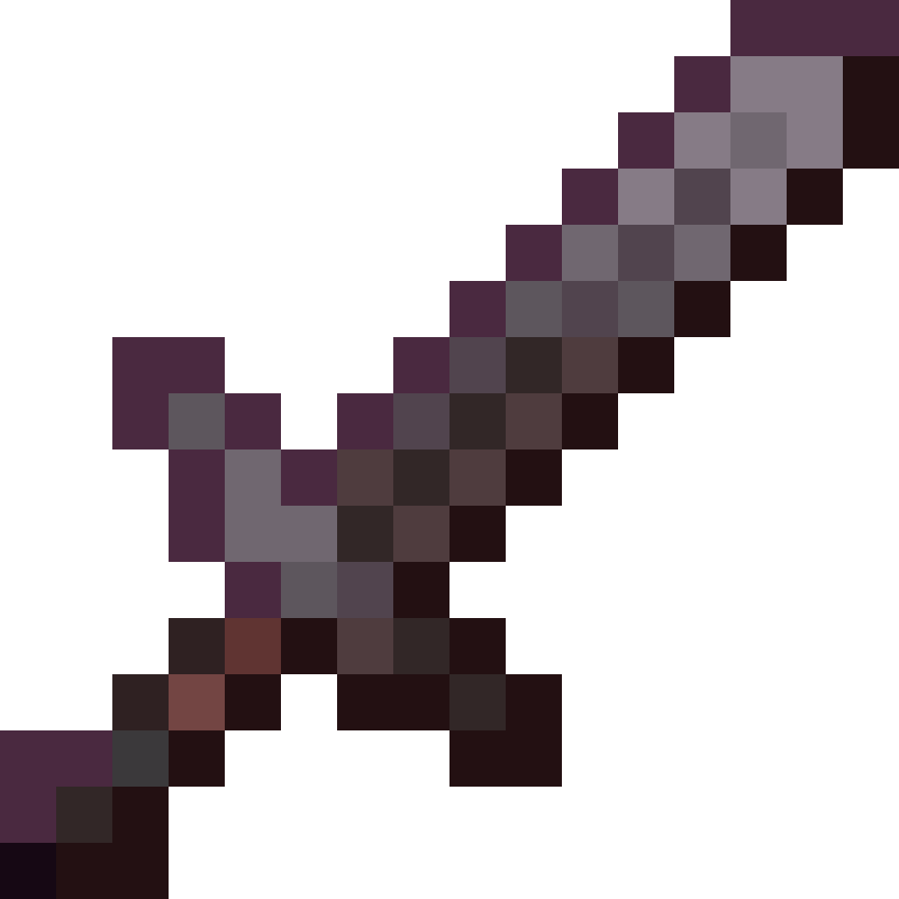
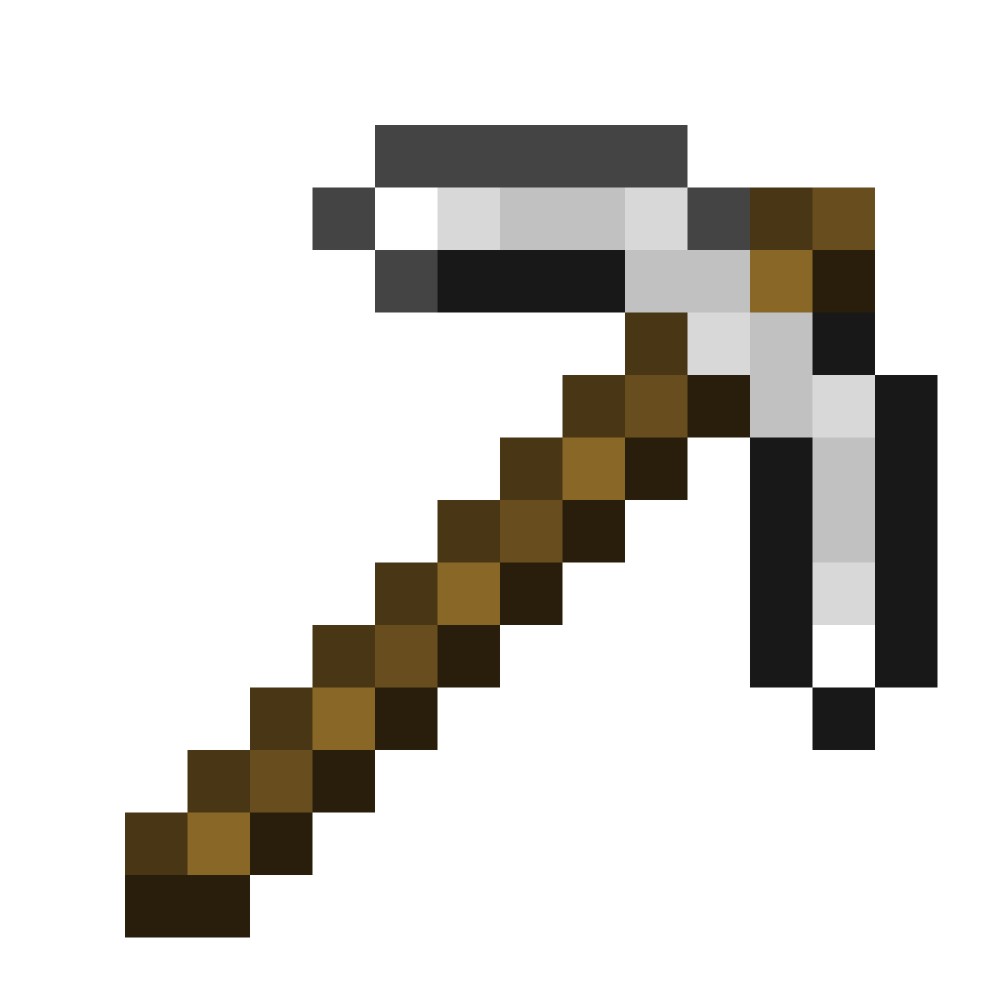

排隊天梯
從大廳物品打開排隊選單，一次可以排好幾個模式，哪邊先湊到對手就先開打。排隊局一律三戰兩勝，結果計入 ELO，綜合積分依你在各模式打的場數加權。
台灣 Minecraft PvP 伺服器
ELO 排隊天梯、FFA 自由戰場、Kit 編輯器與 MCTiers 評級，從 Sword、Mace 到 Crystal 都找得到對手。想放慢步調的時候，SMP 生存分流也一直都在。
01 · PvP 競技分流
配對、計分、排行與練習全是我們為 PvP 分流自己寫的插件。你只要專心打，剩下的交給伺服器。
從大廳物品打開排隊選單，一次可以排好幾個模式，哪邊先湊到對手就先開打。排隊局一律三戰兩勝，結果計入 ELO，綜合積分依你在各模式打的場數加權。
在大廳挑好模式，直接傳進戰場並自動套上 Kit，裝備亂了就 /rekit。擊殺、死亡與連殺都會記進個人數據，也能在排行榜上比高下。
每個模式的物品欄都能照自己的習慣重新排列並存下來。End Game 與 Crystal 還能在限制範圍內自由組 Kit。
用 /party 開房間找朋友打隊伍戰，/spec 觀看任何進行中的對局。排隊局開打時聊天室會公告，點一下 [觀戰] 就能進場。
依模式、排序與國家篩選，只計算排隊局。
/tiers 查任何正版玩家的評級，最強的模式直接掛在名牌上。
/practice 練 Pearl Catch：丟出珍珠、用風彈追上它，個人最佳會留下紀錄。
/rtpq 湊滿兩人，一起傳送到野外同一個地點直接開打。
延遲高也能順手打水晶，伺服器即時處理揮擊與連放，可在 /settings 開關。
/friend 看好友是不是在決鬥中，一鍵單挑、觀戰或組隊。
/report 自動附上座標、延遲與聊天證據；戰鬥中登出直接判死。
/settings 一頁管理決鬥請求、記分板、夜視與提及音效。
02 · 決鬥模式
排隊天梯與 FFA 共用同一套模式，分成三大類。實際開放的模式以遊戲內選單為準。
單一武器的基本功
原版進程的裝備對決
考驗操作的進階玩法
可自由組 Kit 的模式
排隊開打時隨機分配場地，Crystal 則在現場生成的地形上開打。
03 · 分流介紹
PvP 與 SMP 都從 bydsmp.com 進入，但兩邊的背包、經濟與進度各自獨立、互不相通。

打天梯、刷 FFA、練技巧，從大廳一路打到排行榜。

保留原版探索與生電樂趣，再加上一套自製的生活系統。
04 · 加入方式
使用 Minecraft Java 版，建議版本 1.21.11。
多人遊戲 → 新增伺服器，位址填入：
外掛零容忍，PvP 中開掛嚴抓。花一分鐘看完再開打。
伺服器規則公告、活動、問題回報與贊助洽詢都在 Discord。
前往 Discord